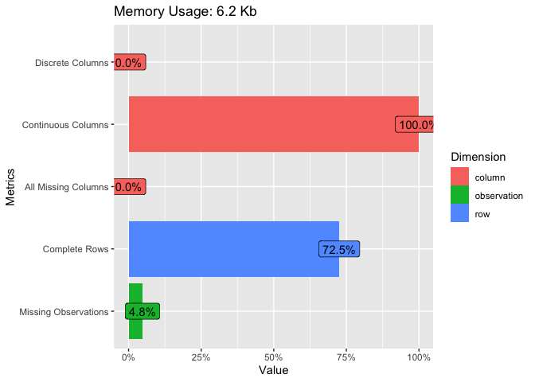
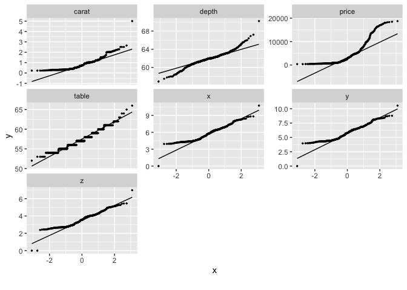
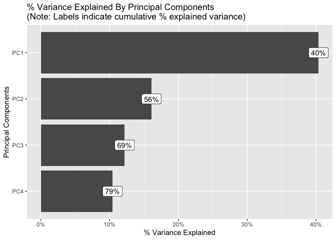

Background
Exploratory Data Analysis (EDA) is the initial and an important phase of data analysis/predictive modeling. During this process, analysts/modelers will have a first look of the data, and thus generate relevant hypotheses and decide next steps. However, the EDA process could be a hassle at times. This R package aims to automate most of data handling and visualization, so that users could focus on studying the data and extracting insights.
Installation
The package can be installed directly from CRAN.
install.packages("DataExplorer")
However, the latest stable version (if any) could be found on GitHub, and installed using devtools package.
if (!require(devtools)) install.packages("devtools") devtools::install_github("boxuancui/DataExplorer")
If you would like to install the latest development version, you may install the develop branch.
if (!require(devtools)) install.packages("devtools") devtools::install_github("boxuancui/DataExplorer", ref = "develop")
Examples
The package is extremely easy to use. Almost everything could be done in one line of code. Please refer to the package manuals for more information. You may also find the package vignettes here.
Report
To get a report for the airquality dataset:
library(DataExplorer) create_report(airquality)
To get a report for the diamonds dataset with response variable price:
library(ggplot2) create_report(diamonds, y = "price")
Visualization
Instead of running create_report, you may also run each function individually for your analysis, e.g.,
## View basic description for airquality data introduce(airquality)
| rows | 153 |
| columns | 6 |
| discrete_columns | 0 |
| continuous_columns | 6 |
| all_missing_columns | 0 |
| total_missing_values | 44 |
| complete_rows | 111 |
| total_observations | 918 |
| memory_usage | 6,376 |
## Plot basic description for airquality data plot_intro(airquality)

## View missing value distribution for airquality data plot_missing(airquality)

## Left: frequency distribution of all discrete variables plot_bar(diamonds) ## Right: `price` distribution of all discrete variables plot_bar(diamonds, with = "price")

## View histogram of all continuous variables plot_histogram(diamonds)

## View estimated density distribution of all continuous variables plot_density(diamonds)
## View quantile-quantile plot of all continuous variables plot_qq(diamonds)

## View quantile-quantile plot of all continuous variables by feature `cut` plot_qq(diamonds, by = "cut")

## View overall correlation heatmap plot_correlation(diamonds)

## View bivariate continuous distribution based on `cut` plot_boxplot(diamonds, by = "cut")

## Scatterplot `price` with all other continuous features plot_scatterplot(split_columns(diamonds)$continuous, by = "price", sampled_rows = 1000L)

## Visualize principal component analysis plot_prcomp(diamonds, maxcat = 5L)

Feature Engineering
To make quick updates to your data:
## Group bottom 20% `clarity` by frequency group_category(diamonds, feature = "clarity", threshold = 0.2, update = TRUE) ## Group bottom 20% `clarity` by `price` group_category(diamonds, feature = "clarity", threshold = 0.2, measure = "price", update = TRUE) ## Dummify diamonds dataset dummify(diamonds) dummify(diamonds, select = "cut") ## Set values for missing observations df <- data.frame("a" = rnorm(260), "b" = rep(letters, 10)) df[sample.int(260, 50), ] <- NA set_missing(df, list(0L, "unknown")) ## Update columns update_columns(airquality, c("Month", "Day"), as.factor) update_columns(airquality, 1L, function(x) x^2) ## Drop columns drop_columns(diamonds, 8:10) drop_columns(diamonds, "clarity")
Articles
See article wiki page.